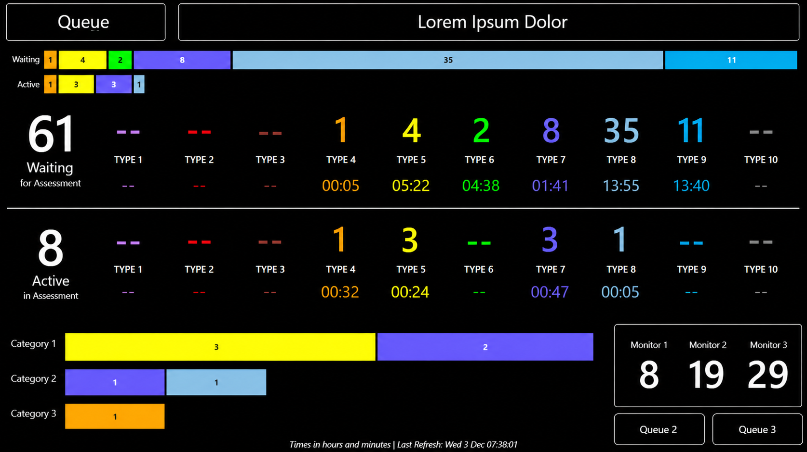

Calls Waiting Wallboard

Requirement
For cases requiring a call back, provide a near-real-time view of call volumes and wait times split across groups to enable teams to see waiting workload, and supervisors to dynamically intervene in queue management and prioritisation. Audience: Clinical contact centre staff and team leaders, senior operational command staff.
Power BI Solution
Direct Query Power BI dashboard polling every 60 seconds, displaying counts of cases by response priority, using both numerical and coloured bar visualisations for the dashboard to be viewed across the room as well as on a desktop. Measures include CALCULATE with COUNT, SUM and FILTER for metrics and MAX / MAXX for durations.
Data Modelling / Engineering
Initiated use of a known flag in the patient management system to show queue status, with support from the vendor, used multi-condition CASE logic across separate event tables within an optimised query against the live tables to prevent interference with critical response operations and ranking window functions to prevent duplicate values.